&
Configurer les sources de Apt (advanced package tool) en mode console en utilisant l'Emulateur de terminal : Debian
Configurer le fichier sources.list, qui se trouve dans : /etc/apt/sources.list
L'Emulateur de terminal :
L'Emulateur de terminal est une application qui fournit une interface utilisateur textuelle.
C'est ce que l'on appelle une interface en ligne de commande. C'est souvent le moyen le plus simple,
le plus rapide et le plus puissant d'effectuer une certaines tâche.
Attention : L'Emulateur de terminal est à utiliser avec le plus grand soin.
AVANT de poursuivre, consulter SourcesList du wiki.debian
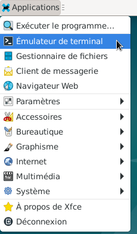
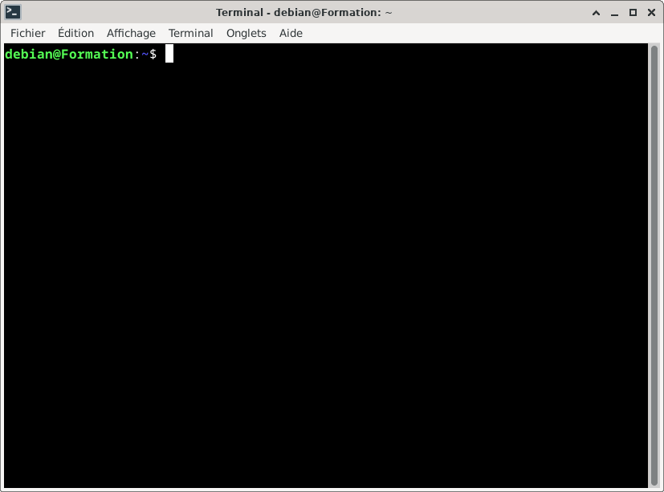
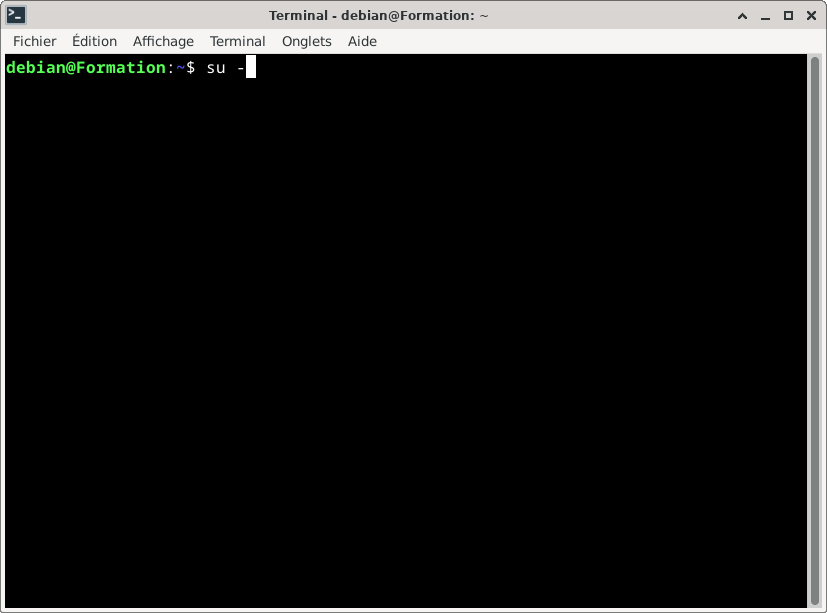
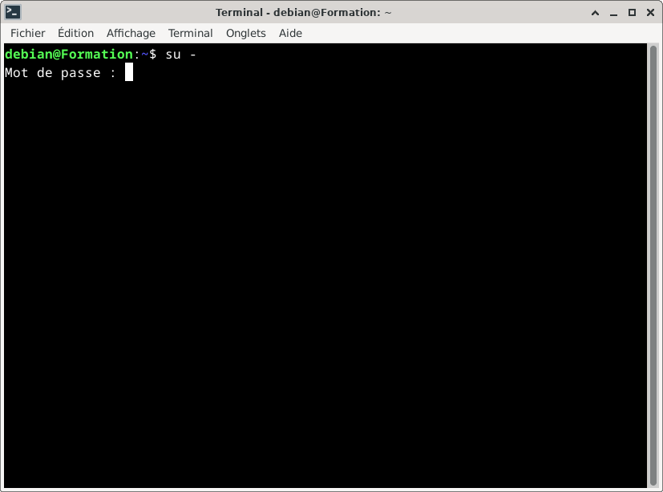
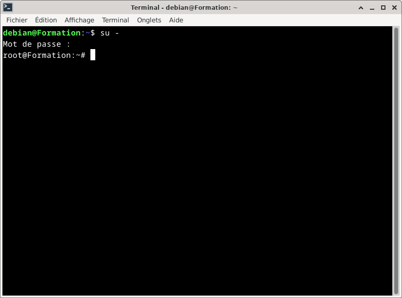
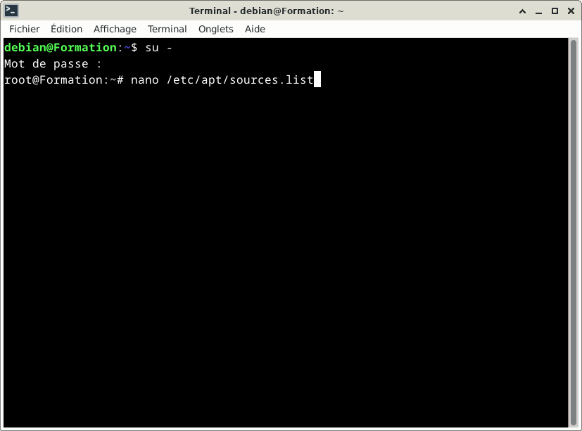
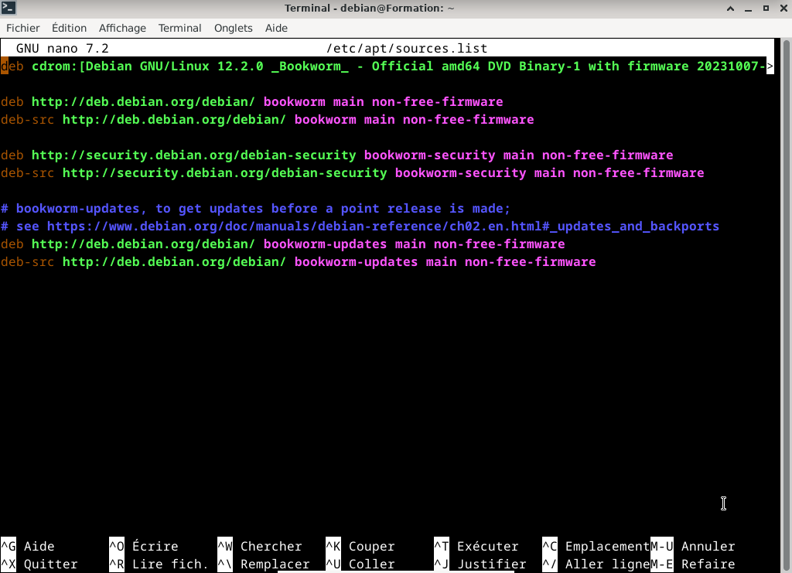
Si souhaité, modifier :
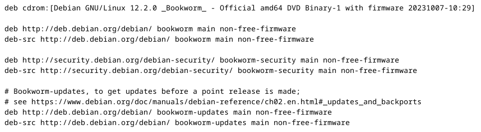
par :
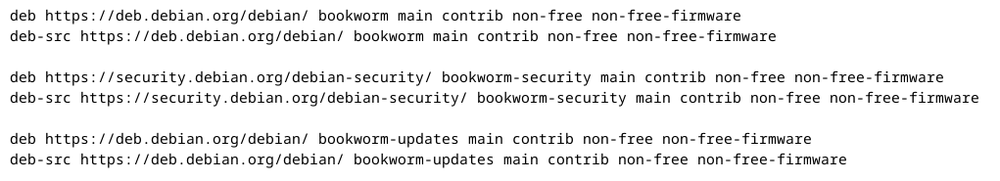
La ligne : deb cdrom : [ Debian GNU/Linux 12.2.0_ bookworm ...] peut être effacée.
Ou ajouter le croisillon « # » ce qui veut dire que la commande concernant le cdrom ne sera plus prise
en compte.
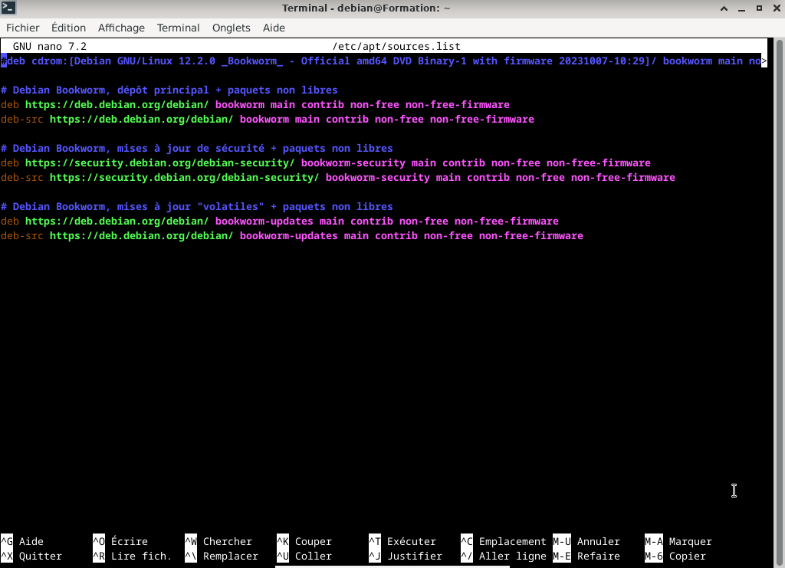
Enregistrer avec les touches du clavier : Ctrl et la lettre « o » puis valider avec la touche Entrée du clavier
Retourner dans : nano /etc/apt/sources.list, les modifications ont été enregistrées.
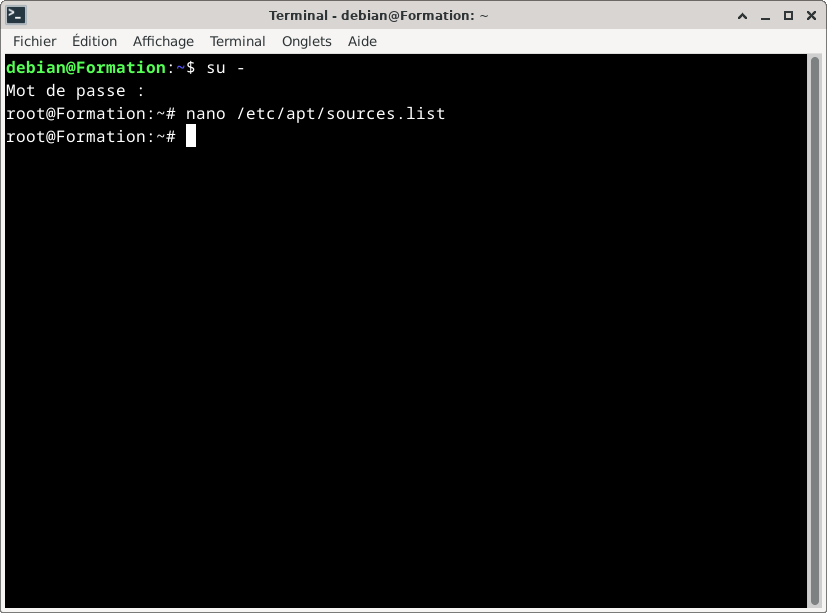
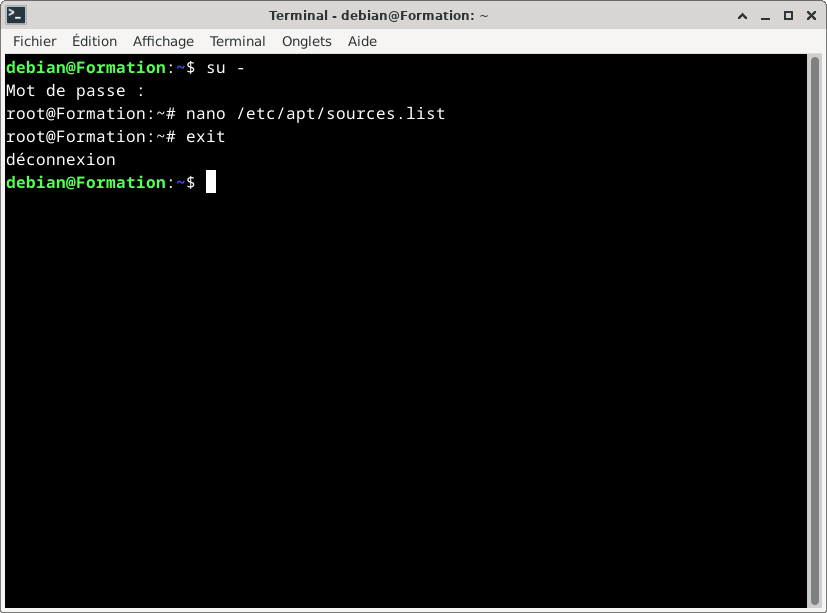
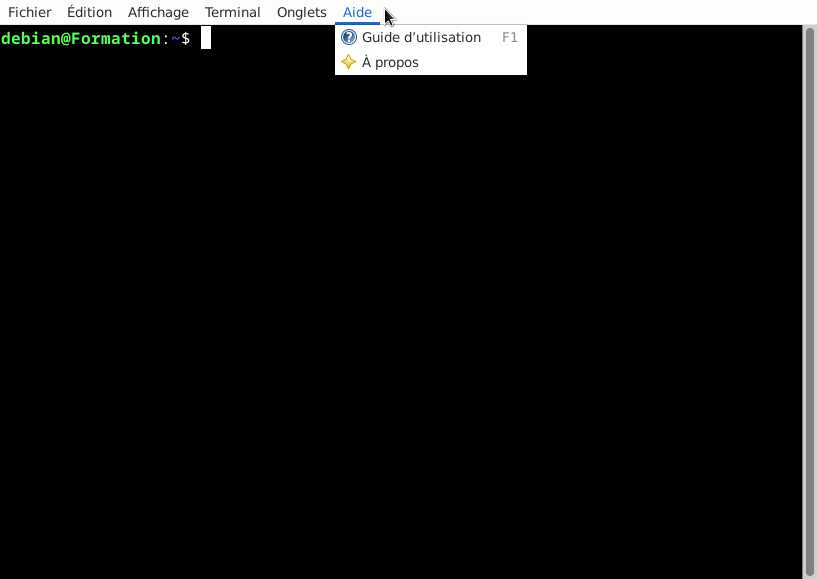
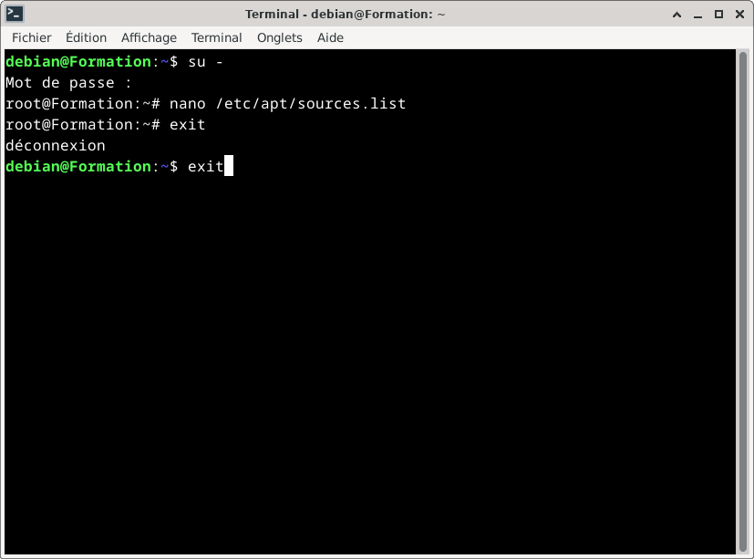

Informations sur le logiciel libre et Merci.
Marques déposées :
Ce site ne fait pas partie de Debian, n'est pas produit par le projet
Debian, ni approuvé par le projet Debian.
Ce site n'est pas affilié à Debian. Debian est une marque déposée appartenant
à Software in the Public Interest, Inc.
Contribuer :
Ce site ne fait pas partie de XFCE, n'est pas produit par le projet
XFCE, ni approuvé par le projet XFCE.
Ce site n'est pas affilié à XFCE.
Ce site est juste réalisé par un passionné.